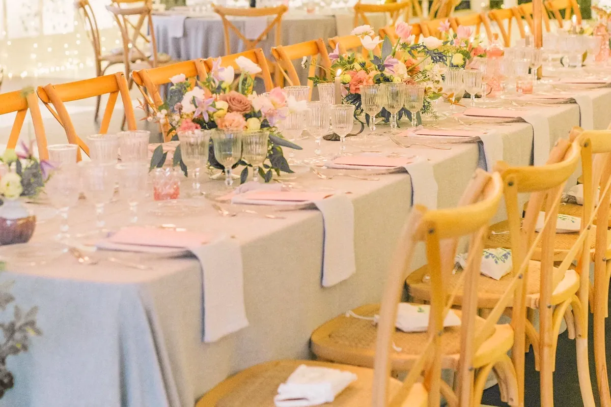
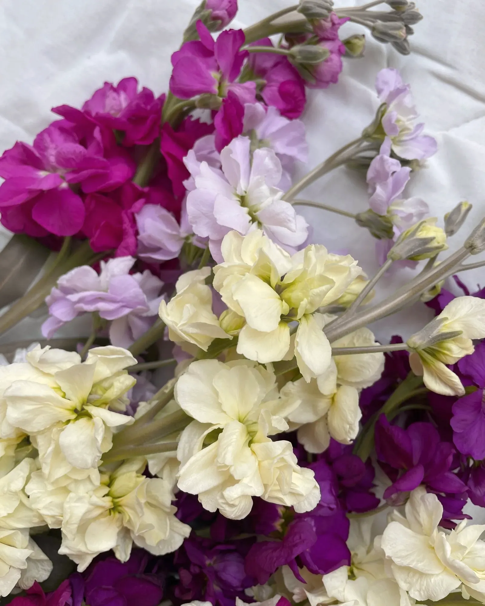
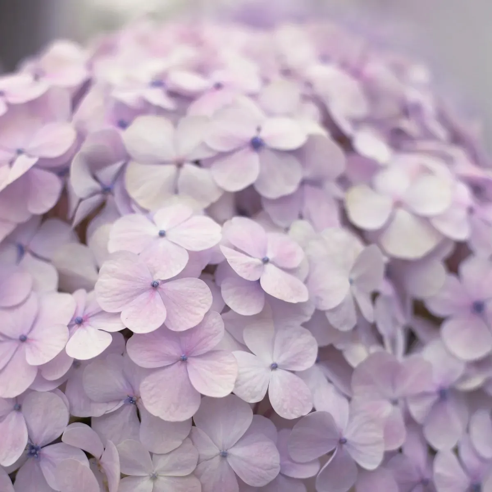
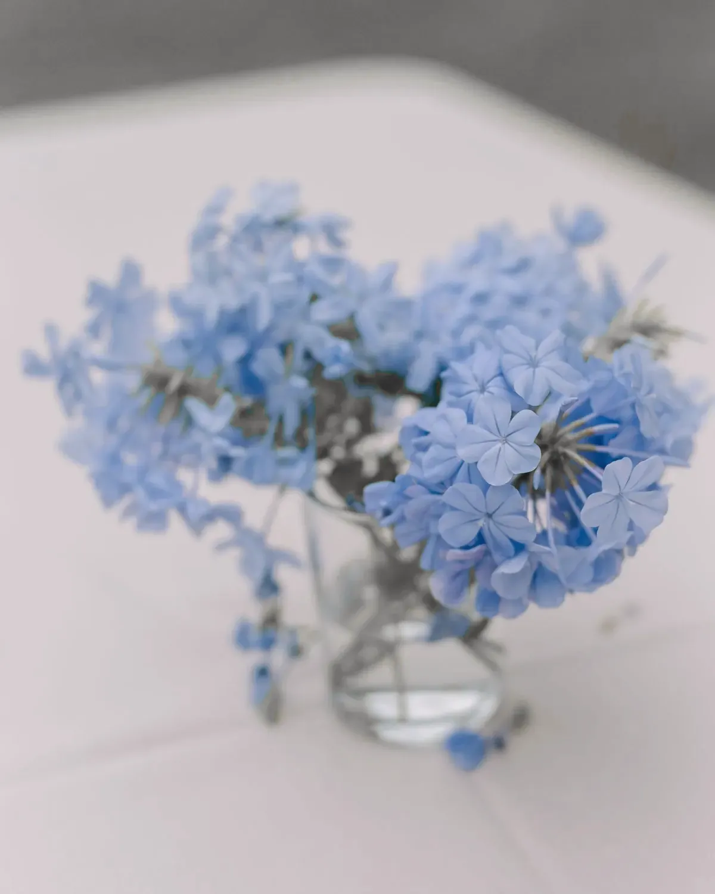
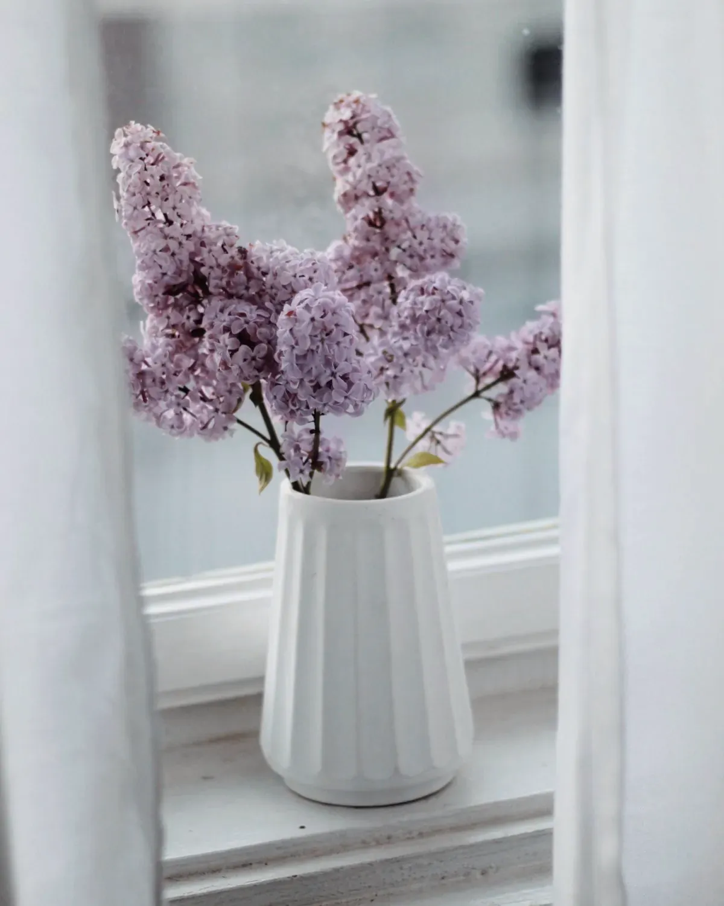
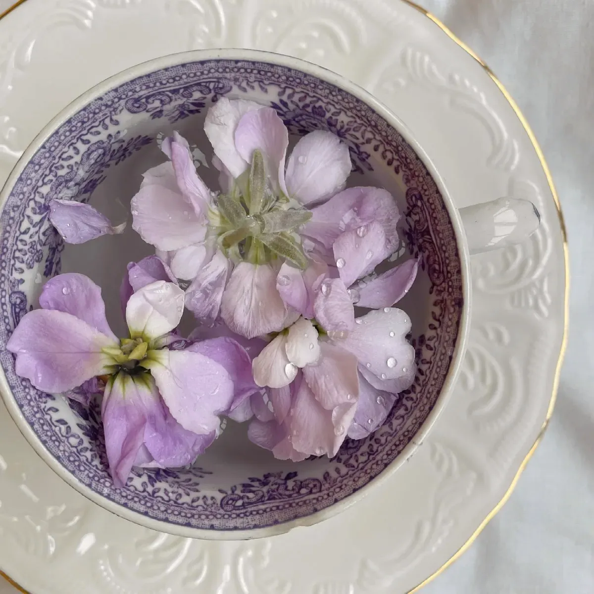
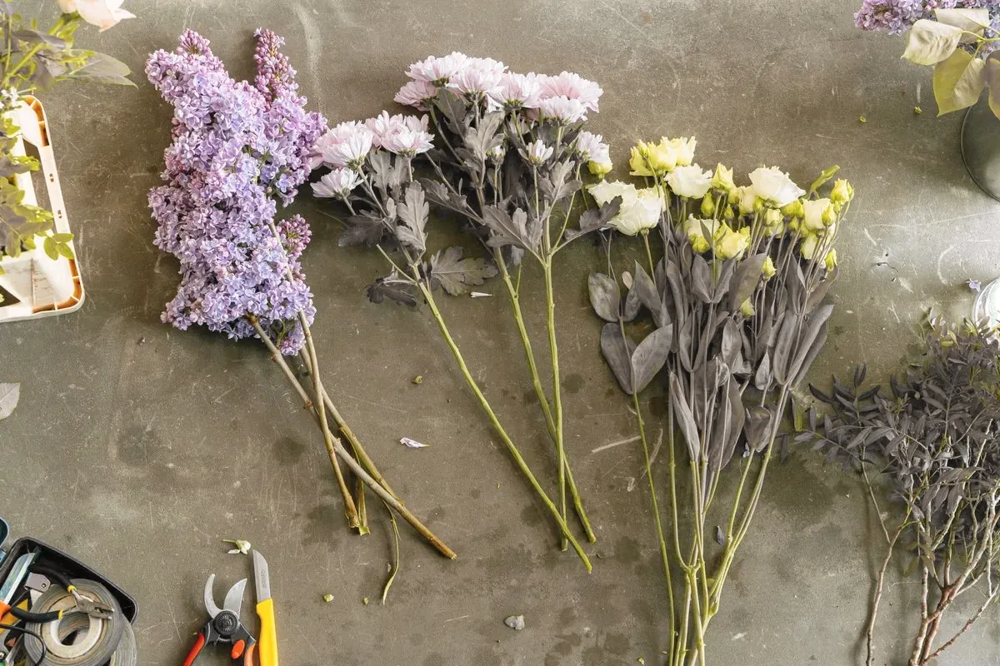
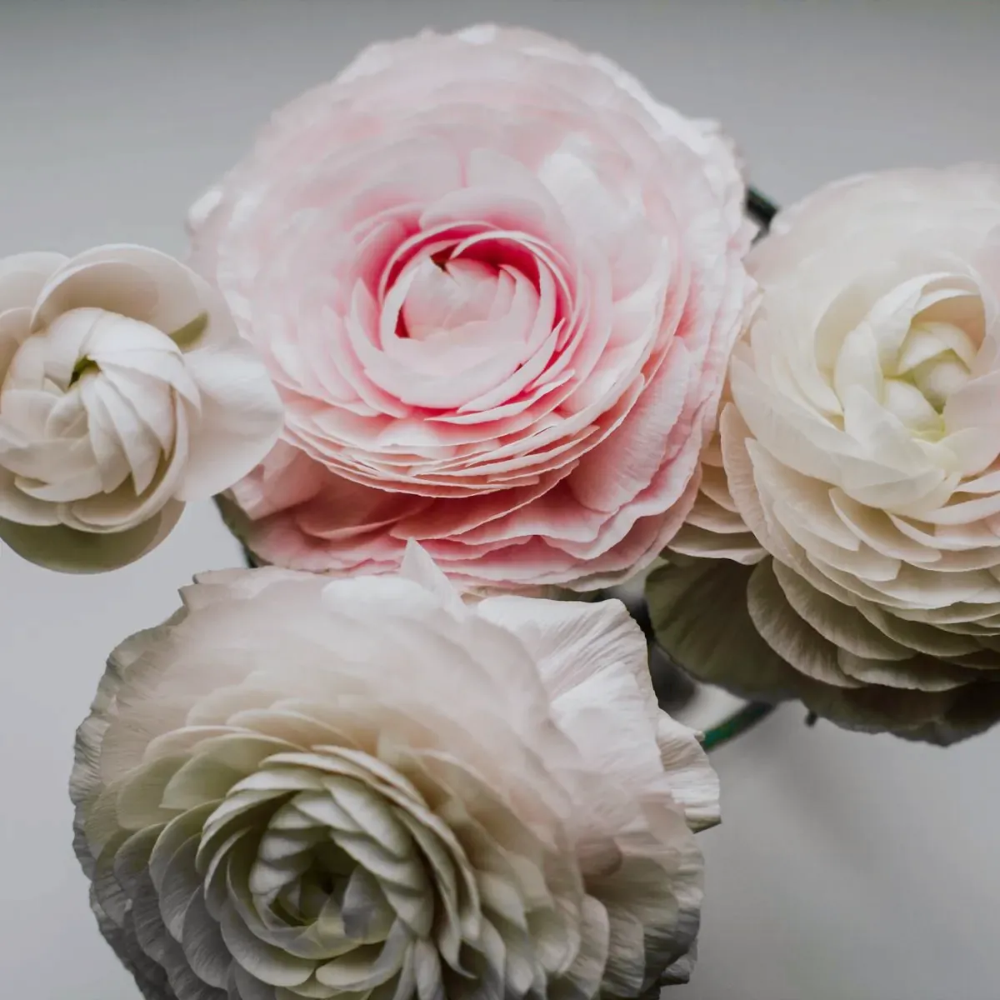
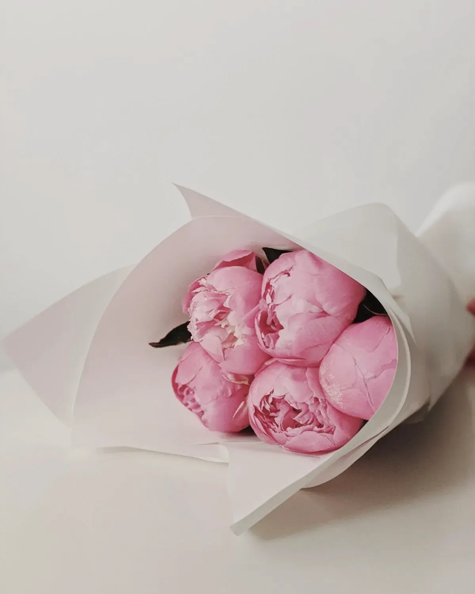
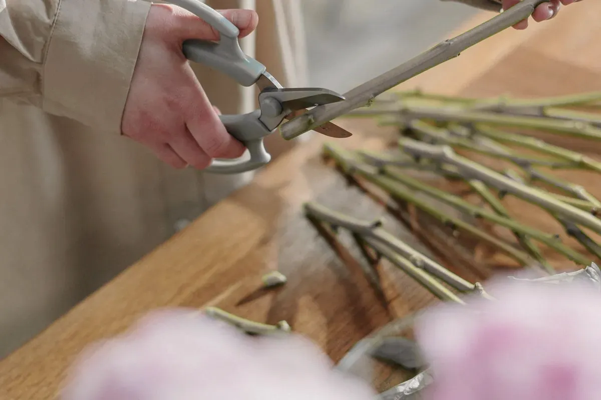

The Pink Table

Ranunculus, garden roses, anemones, sweet peas, and more pink napkins than you think you want.
Pink isn’t a shy colour. I put more of it on the table than you asked for, and you’ll thank me.
Start with this lookPick the look you keep going back to. I’ll tell you honestly if your room can take it.

These are designs, not somebody’s wedding. Find the one that’s yours and we’ll make it for your room.

Ranunculus, garden roses, anemones, sweet peas, and more pink napkins than you think you want.
Pink isn’t a shy colour. I put more of it on the table than you asked for, and you’ll thank me.
Start with this look
Hydrangea, sweet peas, anemones, and a lot of linen.
Hydrangeas sulk the second they’re thirsty, so I bring buckets and I don’t apologise.
Start with this look
Hydrangea, anemones, garden roses in the palest shade going, and whatever blue the week gives me.
True blue flowers are rare and they know it. I’ll tell you what’s honest that week.
Start with this lookGarden roses, ranunculus, anemones, and bramble stems when the hedges will give them up.
Yellow makes people talk louder. Put it near the dance floor.
Start with this look
Lilac when I can get it, sweet peas, stocks, ranunculus, and a little butter to keep it awake.
If it looks like I arranged it, I take it apart and start again.
Start with this look
Stocks, stocks and more stocks, with peonies if the dates line up.
I grow the stocks myself. They smell of cloves and they make people lean in.
Start with this lookI’m a designer who gets her hands dirty. You come to me for how the room looks, and I do everything that decides that, from the first colour to the last petal on the floor.
Better you hear this now than the week before.
My design fee is a share of what you spend on the room. The room means the florals, the furniture, the linen and the installation. It doesn’t mean the food, the venue or the dress.
We start with a paid design consultation. If you go ahead with me, that fee comes off the design fee, so a client who hires me has lost nothing by it.
If we go ahead, a deposit secures your date. What it is and how it works are set out in my contract.
Ranunculus, anemones, the first sweet peas
Peonies, stocks, sweet peas, lilac while it lasts
Garden roses, hydrangea, the last of the stocks
Hydrangea turning, dahlias, late garden roses



Start from a look and tell me the date, the room and roughly how many people. I read every one of these myself.
Tell me what you hated at the last wedding you went to. It’s usually more useful.
That’s the paid design consultation. We walk your look through your actual room and I tell you what will work there.
Bring a photo of the room and the thing you can’t say in front of your mother.
You get the palette, the flower list and a plan of what goes where, with the design fee written down against it. A deposit secures the date.
This is where I tell you the arch is a bad idea. Sometimes it is.
My freelance crew and I install on the day, I stay to run the design, and we strike the room afterwards.
I’m on the ladder at noon and sweeping up petals at midnight.

I started out sweeping the floor of a flower shop and arguing with the owner about colour. I’ve been arguing with people about colour ever since.
It’s me, plus a freelance crew on install days. So when you hire me you get me, not an assistant who’s been told about you.
I’m good at rooms and I’m good at telling you the truth. I’m less good at early mornings, but flowers don’t care.
Those aren’t my hands in the picture, but mine look worse.
This is the start of a paid design consultation. I’ll reply with the fee and some times we could talk, and nothing is booked until you’ve said yes.
If you came from a look, it’s already filled in for you.
Keep it short. I’d rather hear it from you properly when we talk.
I read every enquiry myself. You’ll hear from me by the end of the next working day, with the consultation fee and some times we could talk. There’s nothing to pay until you’ve read that and said yes.